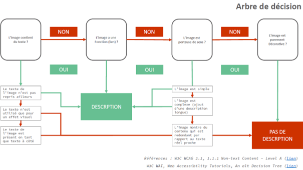

Mise en accessibilité des images dans les EPUBs
Objectif du document
Ce document a pour objectif d’apporter aux personnes participant à la création, la production et la diffusion de livres numériques au format EPUB un ensemble de bonnes pratiques pour rendre accessibles leurs images (quand elles le nécessitent) et signaler ce travail de mise en accessibilité. Pourquoi le faire ? Pour qui et par qui ? Quand et comment ? Voici les questions qui se posent aux éditeurs aujourd’hui et auxquelles nous chercherons à apporter des éléments de réponse.
Le contexte de la Directive européenne
La directive (UE) 2019/882 du Parlement européen et du Conseil du 17 avril 2019 relative aux exigences en matière d’accessibilité applicables aux produits et services (ci-après nommée Directive) inclut les livres numériques et précise les « exigences générales » applicables à l’ensemble des services et « exigences supplémentaires » applicables au livre numérique afin qu’il soit considéré comme accessible :
- 1. veiller à ce qu’un livre numérique contenant des éléments audio en plus du texte fournisse des contenus textuels et audio synchronisés ;
- 2. veiller à ce que les fichiers numériques n’empêchent pas les technologies d’assistance de fonctionner correctement ;
- 3. garantir l’accès au contenu, la navigation dans le contenu et dans la mise en page du fichier, y compris la mise en page dynamique, la mise à disposition de la structure du fichier, la flexibilité et le choix de la présentation du contenu ;
- 4. permettre des restitutions alternatives du contenu et son interopérabilité avec diverses technologies d’assistance, de manière à ce qu’il soit perceptible, utilisable, compréhensible et robuste ;
- 5. permettre la découverte en fournissant des informations, via les métadonnées, sur les caractéristiques d’accessibilité ;
- 6. s’assurer que les mesures de gestion des droits numériques ne bloquent pas les caractéristiques d’accessibilité.
Les exigences de la directive, en cours de transposition en droit français, seront applicables à compter du 28 juin 2025.
Ce sont les points 4 et 5 qui sont traités dans ce document, car ils concernent tous les deux les images contenues dans les publications.
Les bénéficiaires
Le champ des personnes visées par la Directive est large. Il concerne aussi bien les personnes « qui présentent des incapacités physiques, mentales, intellectuelles ou sensorielles durables » que les personnes confrontées à des « limitations fonctionnelles » permanentes, lié à l’âge, temporaires (accidentelle ou situationnelle)
Qu’est-ce qu’un texte alternatif et à quoi ça sert ?
Définition
Un texte alternatif est une (re)transcription textuelle d’un contenu non-textuel afin de le rendre accessible aux technologies Ces dispositifs sont exploités par les matériels/systèmes de lecture dédiés aux publics en situation de handicap, mais aussi par les appareils de lecture grand public (synthèse vocale typiquement). L’intégration d’un texte alternatif dans un livre numérique accessible concerne tous les éléments qui sont non-textuels : les sons, les vidéos, les images (dont un texte ou un tableau représenté en image…).
Pour mémoire, la fourniture et l’intégration de textes alternatifs dans un livre numérique accessible ne concerne pas que les images. Il concerne plus largement tous ses contenus éditoriaux non textuels : sons, vidéos et images donc (dont les textes ou les tableaux représentés en image…).
Toutefois, compte-tenu de la faible volumétrie des EPUBs contenant des vidéos et du son, le groupe Normes et Standards du SNE a décidé de donner la priorité à la question des textes alternatifs aux images. C’est l’objet de ce document.
L’objectif d’un texte alternatif est de transmettre le sens ou le message porté par l’image, le graphique, etc. Suivant le contenu de l’image ou l’intention éditoriale associée, il ne s’agira pas toujours de décrire systématiquement tous les éléments composant une image. Il s’agira parfois de retranscrire textuellement, et subjectivement, le message que l’auteur et l’éditeur ont souhaité véhiculer graphiquement. Les textes alternatifs aux images ne peuvent donc pas toujours être réduits à de simples descriptions objectives.
A qui s’adresse la retranscription textuelle d’image ?
La mise en accessibilité d’une image via un texte alternatif est requise pour tous les publics empêchés de lire. Accessible, le livre numérique peut être lu dans des modalités variées, comme le recours à la voix de synthèse ou à un clavier Braille, ou à d’autres dispositifs. Ces recours sont cruciaux pour les personnes aveugles, mais également très utiles pour d’autres situations de handicap ou de nouveaux usages (lecture mains libres, assistants vocaux, …). Les textes alternatifs sont donc potentiellement profitables à toutes et tous. Il est important de ne pas réfléchir uniquement en fonction des handicaps visuels.
Image informative ou image décorative ?
Faut-il pour autant ajouter un texte alternatif pour tous les contenus non textuels ? Si non, quels sont les critères déterminants ?
La première étape est de déterminer si les images dans leur contexte sont informatives ou décoratives. Le statut décoratif ou informatif des images ne leur est pas toujours inhérent. Il relève très souvent d’un choix éditorial dans l’appréciation de ce statut.
Qu’est-ce qu’une image décorative ?
Il s’agit d’une image ajoutant une décoration visuelle à la page, fond de page, motifs, vignette, cul de lampe etc., qui n’est pas indispensable à la compréhension, qui ne porte pas de message que l’éditeur souhaite faire passer, etc.
L’ajout d’un texte alternatif pour ces images est déconseillé, car plutôt que de l’aider, il gênerait la lecture pour les personnes en situation de handicap en la ralentissant inutilement.
Qu’est-ce qu’une image informative ?
Une image informative est une image porteuse d’un message que l’éditeur souhaite restituer textuellement aux personnes empêchées de lire, dans un contexte de publication précis.
Différents types d’images informatives :
- Image signifiante : image représentant des concepts et des informations, voire des messages émotionnels (photographie, peinture, illustration…).
- Image de texte : texte lisible présenté sous forme de pixel
- Image cliquable : image utilisée comme lien ou comme bouton
- Image de données : image qui repose sur un jeu de données (graphique, diagramme, organigramme, tableau de données), lorsqu’un texte court ne suffit pas pour décrire le sens.
- Groupe d'images : ensemble d’images véhiculant une seule information
- Image interactive : contient différentes zones cliquables
En fonction de la typologie, le message est soit objectif, soit subjectif. Par exemple, un logo Facebook cliquable n’a pas de message émotionnel à faire passer et peut donc avoir un texte alternatif objectif. Par contre, une illustration, peut avoir pour but de susciter une émotion qu’il sera nécessaire de transmettre textuellement. Dans ce cas, il s’agit d’une transcription subjective qui traduit l’intention de l’auteur et de l’éditeur.
Quand et comment rédiger un texte alternatif ?
Pour chaque image, il faut déterminer si un texte alternatif est nécessaire. Cette décision repose non seulement sur le statut décoratif/informatif de l’image, mais aussi sur le contexte de l’image dans la page.
Les images sont généralement entourées par du texte qui est plus ou moins corrélé à l’image. Par exemple, si un paragraphe ou une légende d’image décrivent l’information portée par l’image, alors un texte alternatif n’est pas indispensable, puisque cette information est déjà fournie dans le texte.
C’est pourquoi le contexte textuel a toute son importance dans le processus de décision et d’élaboration du texte alternatif.
Il ne faut pas oublier que ce texte alternatif sera lu en contexte par les technologies d’assistance. Il va donc s’insérer dans l’ordre de lecture d’un contenu qui sera devenu complètement textuel (car les technologies d’assistance n’affichent pas les images).
Le choix éditorial de la fourniture d’un texte alternatif
Pour permettre aux éditeurs de déterminer quelles sont les images pour lesquelles ils doivent fournir ou non un texte alternatif, voici un arbre de décision qui pourra les aider.
L’arbre de décision ci-dessous recense les questions qui peuvent se poser afin de déterminer la nécessité/pertinence d’un texte alternatif.

La rédaction d’une charte éditoriale par maison d’édition peut être un outil utile à mettre en place par les éditeurs.
Exemple de texte alternatif en fonction du contexte
| Quel est le contexte ? | Dans un livre d’histoire, un chapitre détaille plusieurs chefs militaires et cette image introduit un paragraphe sur Napoléon | Dans le même livre d’histoire, cette image est suivie d’un texte indiquant « Napoléon Ier » | Dans une biographie de Napoléon, cette image est utilisée comme lien vers un article Wikipédia | Cette image est présente dans une biographie du peintre Jacques-Louis David | Dans un livre, l’image est accompagnée d’une légende suffisante pour en comprendre le sens |
|---|---|---|---|---|---|
| Quel texte alternatif serait pertinent ? | 2 options : 1/ Napoléon Ier 2/ Aucun |
Aucun | Article Wikipédia sur Napoléon Ier | Portrait de Napoléon Ier par Jacques-Louis David | 2 options : 1/ Image 2/ Aucun |
Alternative textuelle courte et longue
Définition :
Pour les images informatives, la fourniture d’un texte alternatif court est le plus souvent nécessaire car elle sera lue précisément à la position de l'image qu'elle remplace. La fourniture d’un texte alternatif long complémentaire peut-être requise dans deux cas de figure :
- l’information nécessite une description détaillée et ne peut pas être résumée brièvement ;
- l'information nécessite d'être structurée avec des paragraphes, des titres, des listes ou des tableaux.
Le contenu et la longueur de ces textes sont des choix éditoriaux qui dépendent principalement de trois critères :
- le contexte textuel environnant (qui peut contenir une partie de l’information) ;
- la complexité de l’image ;
- le public ciblé par la publication (enfants, professionnels, etc.).
Quand un texte alternatif long est nécessaire ? Quelles questions se poser ?
[Mettre arbre Décision slide 28]
Un texte alternatif long sera forcément accompagné d’un texte alternatif court et d’un texte de libellé de type « lire la description longue ».
L’intégration technique et la restitution des textes alternatifs courts et des textes alternatifs longs sont différents. C’est pourquoi ces deux types de textes alternatifs doivent être clairement distingués lors de leur transmission au prestataire de fabrication EPUBs (cf. Intégration technique).
Rédaction des textes alternatifs
Qui rédige ?
L'éditeur va déterminer la nécessité d’un texte alternatif et, si besoin, son rédacteur en fonction de son organisation. L’auteur et l’éditeur sont les mieux placés pour transmettre l’intention du choix de l’image.
Les textes alternatifs seront rédigés par le service éditorial avec ou sans l’auteur, L’auteur est souvent requis quand il s’agit d’une image qui nécessite une compétence ou une connaissance dans un secteur particulier (par exemple en astronomie, en chimie).
On pourra sous-traiter la saisie d’un texte alternatif au compositeur dans le cas d’un texte modélisé en image ou d’une image récurrente. L’éditeur devra alors s’être entendu en amont avec le compositeur, via un cahier des charges explicite, sur le contenu du texte alternatif (par exemples texte du logo, titraille traitée en image, image de couverture, d'un pictogramme récurrent, etc.).
Quelques bonnes pratiques pour la rédaction
- Offrir les mêmes informations qu’aux voyants : ni plus, ni moins ;
- Ne faire perdre aucune information nécessaire à la compréhension ;
- Éviter les doublons (cf. information déjà présente dans le texte), être concis (en allant à l’essentiel) pour ne pas rallonger le temps de lecture avec les technologies d’assistance ;
- Garder le même ton, vocabulaire, niveau de langue que ceux utilisés dans la publication ;
- N’indiquer la typologie de l’image que si nécessaire (dessin, gravure…) ;
- Tirer parti du brief édito aux iconographes pour le choix de l’image (si disponible) ;
- Tirer parti des métadonnées d’images fournies par la banque d’image ou la photothèque (si disponibles et pertinentes pour l’accessibilité).
Comment savoir si son texte alternatif est pertinent ?
Il y a autant de possibilité de textes alternatifs que de personnes rédigeant, Ce faisant, il n’y a pas un seul texte alternatif pertinent, mais potentiellement plusieurs.
Pour juger de la pertinence d’un texte alternatif, l’éditeur doit se mettre à la place du lecteur empêché.
La lecture sans support visuel n’est pas l’exclusivité des aveugles ou déficients visuels et la rédaction d’un texte alternatif ne nécessite pas d’expertise dans le domaine du handicap. Chaque éditeur peut simuler une expérience de privation d’accès visuel à l’image par différents moyens : se lire le texte alternatif à haute voix les yeux fermés, imaginer décrire l’image par téléphone à quelqu’un, etc. Cela lui permettra d’exercer son bon sens pour juger de la pertinence de son texte alternatif et de l’ajuster si besoin.